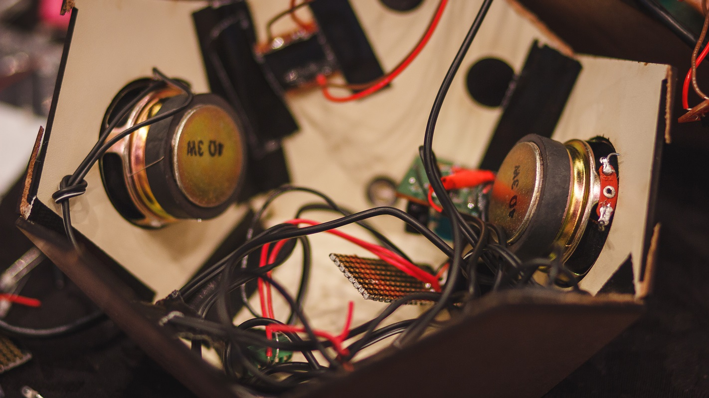
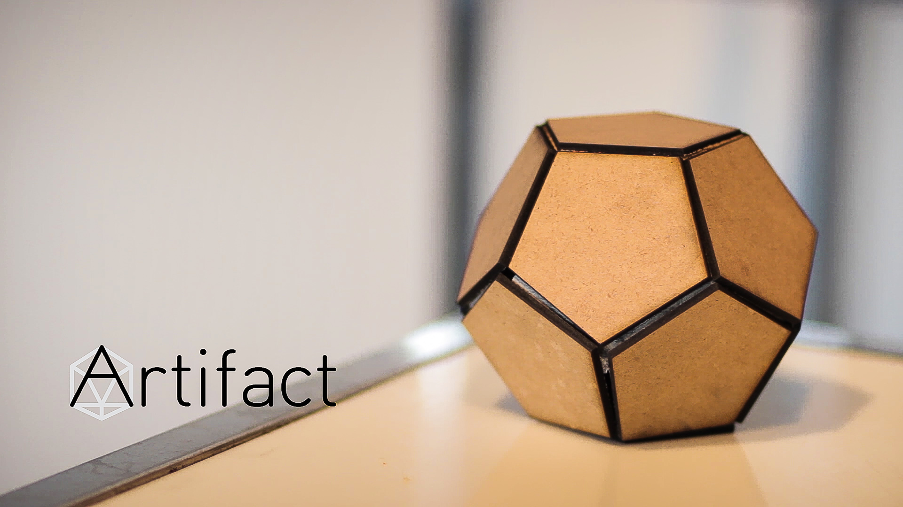

A video showing how we imagine our users and customers using Artifact
Weekend Hack
We constructed several iterations of a package shape, built a recording circuit using a Raspberry Pi, mocked up an online UI, interviewed many potential users and played around with natural language processing, laser cutting, and wifi adapters.
You can see some of our work from the weekend in the photos below.




The Artifact Team
Our team came together at the Kitchener-Waterloo PCH Hardware Hackathon around a vision of helping people share memories and experiences using collectively-created storytelling objects.
Contact us over on our github.